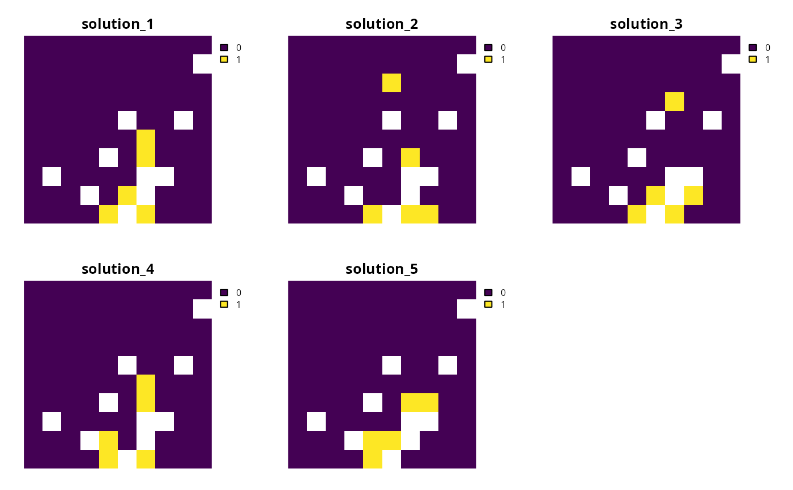
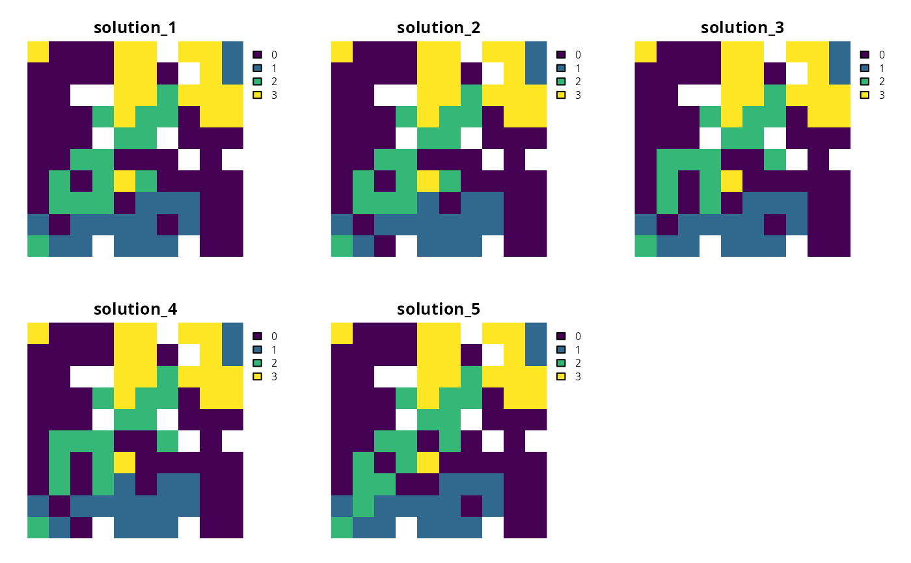

Generate a portfolio of solutions for a conservation planning problem by finding a certain number of solutions that are all within a pre-specified optimality gap. This method is useful for generating multiple solutions that can be used to calculate selection frequencies for moderate and large-sized problems (similar to Marxan).
Arguments
- x
problem()object.- number_solutions
integernumber of solutions required. Defaults to 10.- pool_gap
numericgap to optimality for solutions in the portfolio. This relative gap specifies a threshold worst-case performance for solutions in the portfolio. For example, value of 0.1 will result in the portfolio returning solutions that are within 10% of an optimal solution. Note that the gap specified in the solver (i.e.,add_gurobi_solver()must be less than or equal to the gap specified to generate the portfolio. Defaults to 0.1.
Value
An updated problem() object with the portfolio added to it.
Details
This strategy for generating a portfolio requires problems to
be solved using the Gurobi software suite (i.e., using
add_gurobi_solver(). Specifically, version 9.0.0 (or greater)
of the gurobi package must be installed.
Note that the number of solutions returned may be less than the argument to
number_solutions, if the total number of solutions that
meet the optimality gap is less than the number of solutions requested.
Also, note that this portfolio function only works with problems
that have binary decisions (i.e., specified using
add_binary_decisions()).
See also
See portfolios for an overview of all functions for adding a portfolio.
Other portfolios:
add_cuts_portfolio(),
add_extra_portfolio(),
add_shuffle_portfolio(),
add_top_portfolio()
Examples
# \dontrun{
# set seed for reproducibility
set.seed(600)
# load data
sim_pu_raster <- get_sim_pu_raster()
sim_features <- get_sim_features()
sim_zones_pu_raster <- get_sim_zones_pu_raster()
sim_zones_features <- get_sim_zones_features()
# create minimal problem with a portfolio containing 10 solutions within 20%
# of optimality
p1 <-
problem(sim_pu_raster, sim_features) %>%
add_min_set_objective() %>%
add_relative_targets(0.05) %>%
add_gap_portfolio(number_solutions = 5, pool_gap = 0.2) %>%
add_default_solver(gap = 0, verbose = FALSE)
# solve problem and generate portfolio
s1 <- solve(p1)
# convert portfolio into a multi-layer raster
s1 <- terra::rast(s1)
# print number of solutions found
print(terra::nlyr(s1))
#> [1] 5
# plot solutions
plot(s1, axes = FALSE)

# create multi-zone problem with a portfolio containing 10 solutions within
# 20% of optimality
p2 <-
problem(sim_zones_pu_raster, sim_zones_features) %>%
add_min_set_objective() %>%
add_relative_targets(matrix(runif(15, 0.1, 0.2), nrow = 5, ncol = 3)) %>%
add_gap_portfolio(number_solutions = 5, pool_gap = 0.2) %>%
add_default_solver(gap = 0, verbose = FALSE)
# solve problem and generate portfolio
s2 <- solve(p2)
# convert portfolio into a multi-layer raster of category layers
s2 <- terra::rast(lapply(s2, category_layer))
# print number of solutions found
print(terra::nlyr(s2))
#> [1] 5
# plot solutions in portfolio
plot(s2, axes = FALSE)

# }